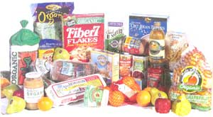
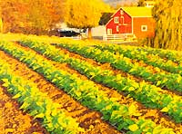
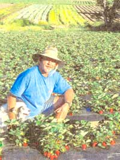
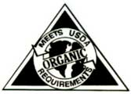

Issue # 169 - August/September 1998
GARDEN & YARD
When the federal government starts getting into the act of regulating "organic" food, you can bet things will get complicated.
Wouldn't it be wonderful if something so simple, so down to earth and almost folksy as organic agriculture ushered in an age of reason in national government? I'd better correct myself right off the bat. Organic agriculture is not simple. The brouhaha over the proposed National Organic Standards that were put out for public review earlier this year is not about something simple. There are over 40 organic certifying entities around the country. Each has its own set of standards. Each set of standards was arrived at through rigorous review. Many are reviewed and revised each year.
Why doesn't one certifying entity use the standards painstakingly drafted by another? There are valid points of debate. As president of the Maine Organic Farmers and Gardeners Association (MOFGA) in the early 1970s, I was involved with certification standards during some of the early drafts. MOFGA was one of the first organizations to certify growers. To this day, the MOFGA
Certification Committee reviews their standards annually, usually makes some changes, and then passes their recommendations on to the board. I attended the board meetings for the past two years when the standards were discussed and voted upon. It doesn't seem any easier 25 years later. One of the problems to be faced from the start is that even a definition of organic is not simple.
Definition of Organic and the Dawning of the Mad Scientist Era
When I began being an activist for organic agriculture, the agricultural chemical industry tried to put down our methods through confusion and derision. One of their favorite attacks was to say that "organic" was simply the branch of chemistry having to do with carbon. It is difficult today to believe that this was an argument that was put forward as having validity, or that we actually felt we had to defend ourselves, but chemists were scientists, and we were not even proper farmers. Back then, chemists and other scientists were "bringing good things to life." Today, chemists are seen with a more critical eye.
Brad Partin and his dog Cody survey their crops.
I don't want to vilify scientists. Scientists are learning wonderful things that do help us understand and live our lives. There is so much to study and try to understand, especially about living organisms. Who can deny that an understanding of genetics is a good thing? It can lead to a better understanding of how die natural world works. It can also lead to new paths of philosophical discussion. Releasing into the world man-manipulated organisms designed for a very narrow purpose and without a clue of the potential impact on nature, on us, or on future generations is mad science. To take a technology like irradiation and apply it to our food to "make it safe" seems like madness to me. Sure, zapping the food will kill off the microorganisms that cause food poisoning. But, just like a contact poison pesticide, it kills many more good or benign insects than harmful ones. Won't the irradiation kill good or benign microorganisms? Where might this lead eventually in the health of our bodies? Does anyone know? Sometime in the future, will we learn that irradiated food is a serious health problem? It is this kind of science that we are leery of. Cleaning up our food production and delivery system would certainly make our food safer, too. Let me digress a moment with a favorite story of mine. A friend had a few cows. He milked the cows by hand into a bucket in the barn with who-knows-what floating around in the air. He sold this raw milk coming right from the udder of a cow. The high school science teacher bought some milk from him one day. He came back the next day to say that he had bought the milk to show his students the difference between raw and store-bought milk. He put both under the microscope where they could observe the number of bacteria in each. Which do you think was the cleanest? The science teacher was amazed. He thought the packaged product from the store would be bacteria-free and the raw milk would be swarming with bacteria. It was the other way around. Most of the problems arise after the product leaves the farm.
Since we are at an important juncture in the history of agriculture, a brief history of the use of land might be helpful. Before agriculture, when we were hunters and gatherers, plants and animals found the nutrients they needed fairly randomly and they deposited nutrients the same way. Plants grew and died. adding organic matter. Animals ate, defecated, and died, adding organic matter. In some places, like the Great Plains of this country, a deep rich soil was built over many years.
When we began cultivating the land, we learned that crops would do well for several years and then the yield would start to fall off. One solution was to move onto another plot of land. Then it was discovered that adding manure to the land made it possible to continue farming on the same piece. About 1840, Justus von Liebig identified certain nutrients that plants needed, and soon after, the first chemical fertilizer was bagged for sale. Farmers are by nature fairly conservative. If something is working, they stick with it. It took about 80 years after it was first bagged for chemical fertilizer to really catch on.
In the late 1800s and early 1900s, most farms had crops and animals. The animals produced manure for the crops and some of the crops went to feed the animals. In urban areas, horse manure was plentiful. In the Midwest, deep rich topsoil was available. There was either a reserve of humus-rich soil to draw upon, or organic matter was available to replace the humus. Tlien came the car, train, and electric trolleys, and the source of horse manure went out of style in urban areas. In the Midwest, the soil bank was being depleted. Farmers were told they had to be more efficient to be competitive; they had to choose between raising animals or crops. These were the major factors which pushed farmers into the arms of the agricultural chemical industry.
Chemical fertilizers were easy to use and made it possible to grow crops on soil with little or no humus. But soil erosion in agricultural areas where soil had been depleted through the use of chemical fertilizers, poor management practices, and the dust bowl in the Midwest in the 1930s caused some people to question the direction agriculture was taking. In the 1920s, Rudolf Steiner founded the bio-dynamic method of farming which eschewed chemicals and focused on humus. The agronomist Sir Albert Howard, working in India, recognized that native crops were not plagued by insects the same way the government crops were. He determined that the difference was the use of chemicals and lack of humus. He told of his experiments and findings in An Agricultural Testament published in 1940 by Oxford University Press.
In 1942, J. I. Rodale began publishing Organic Farming and Gardening magazine. Thirty years after the first issue of Organic Farming and Gardening, and eighteen years after the publication of Silent Spring by Rachel Carson (Houghton Mifflin, 1962), organic farmers were being labeled "hippie-weirdo-freaks." At the same time, wells were being drilled deeper in the Midwest to find water for irrigation, because the humus-poor soil would not retain water. The irrigated soil, in time, suffered from a buildup of the salts from the chemical fertilizers. Add another 25 years to bring us up to date, and we are debating the definition of "organic." It is heartening that this debate is on a national level. It is heartening that it is over a national standard. And it is most heartening that people have been so intensely interested in the debate as to respond in writing to the United States Department of Agriculture (USDA) with over 130,000 comments. It may he another 25 years or more before the majority of the food we eat can he labeled as having been grown chemical-free. We are all pretty slow in making changes of this kind. But what is happening now is downright exciting for one of those hippie-weirdo-freaks of 25 years ago.
The definition of organic that is in the preamble to the proposed rule for National Organic Standards reads: "The system of organic farming and handling is a system that is designed and managed to produce agricultural products by the use of methods and substances that maintain the integrity of organic agricultural products until they reach the consumer. This is accomplished by using, where possible, cultural, biological, and mechanical methods, as opposed to using substances to fulfill any specific function within the system, so as to maintain long-term soil fertility, increased soil biological activity, ensure effective pest management, recycle wastes to return nutrients to the land, provide attentive care to farm animals, and handle the agricultural products without the use of extraneous synthetic additives for processing."
Who currently certifies food as 'organic"?
State Agencies In some states, the state Department of Agriculture certifies growers and handlers. For example, the states of Washington and Texas have strong certification programs administered by their Department of Agriculture.
Third-Party Agencies In many states, third-party organizations certify growers and handlers. These certification organizations include NOFA (in the Northeast), MOFGA (Maine), OCIA, FVO, and dozens more.
Self-Certifier In some states, growers or handlers may certify themselves by submitting an affidavit of compliance with state organic regulations to a state agency. If the growers are responsible, they can (and often do) apply standards more rigorous than those required by the state. However, self-certification also leaves the door open to unscrupulous growers who misrepresent their products and deceive the consumer as a result.
What makes agreeing on the standards of such a reasonably-defined system so difficult? People are involved and the issues are complex. Food mostly comes in pure-seeming packaging. There are few people who want to buy a chicken with head and feet attached, even though that is how you can tell how fresh the chicken is. Yet we no longer trust scientists when they tell us something is safe. And the people involved in organic agriculture are, for the most part, independent, opinionated, and highly ethical.
One of the issues is the use of sewage sludge. That is where most human manure and urine goes. This organic material should be recycled. It is high in nutrients and would make an excellent fertilizer. If we keep taking this nutrient-rich humus out of the system, how can we ever have enough natural fertilizer? "Hey, wait a minute! You want to grow the lettuce I am going to eat on land that was fertilized with human feces?" That's what the consumers are going to say (or words to that effect). Plus, there are pathogens in it. It is a dangerous substance. Just handling it is dangerous. If you don't wash everything properly those pathogens could get in the food. We can write standards, however, for its use in order to avoid the pathogen issue. It could simply be composted, and once composted properly, all the pathogens would be dead.
The next complication is, of course, what is "proper composting?" We aren't talking about night soil out of the outhouse. We are talking about sewage sludge. What else is in it? Heavy metals? Testing for such metals will have to be rigorous, because heavy metals could be in one batch and not another. It is prohibitively expensive to test every batch. Besides which, the farmer has a limited time frame in which to spread the sludge. He can't he waiting around for test results. This problem is just one of the many, many needing resolution in the search for a national standard of organic growing.
Treated Seeds
Twenty-five years ago, untreated seeds were not available for all varieties of plants. Some years, the MOFGA standards allowed treated seeds, provided there was no reasonable substitute. At one time, we allowed people to use treated seeds if they washed them first. Then the problem was, how do you properly wash them and how do you properly dispose of the water? The MOFGA standards currently do not permit the use of treated seeds. The reason for this seemingly narrow position is that there are two seed companies in Maine offering a wide variety of seeds, all of which are untreated. Nationally, most of the better companies offer seeds that are untreated. There is one variety of seed that I like that is exclusive to one company and that company treats many of their seeds, including this particular variety. I write to the company periodically to request that they offer the variety untreated and some years they do. Most years, I don't bother to deal with that company. The National Standards read, "Treated seeds are used only when untreated seeds of the same variety are not commercially available or unanticipated or emergency circumstances make it unfeasible to obtain untreated seeds." The organic community may be divided on this issue, but it is probably not a rule-breaking division.
...and Animal Feed
A similar issue in the National Standards organic feed, can a percentage of the feed be non-organic? Consumers say emphatically "no." Organic animal producers who control their source of feed say "no." Organic animal producers who are dependent on the availability of organic feed in the market want some flexibility. What makes these discussions especially difficult is that all of the people involved want the same thing. They all want a high standard for organic food and they are all willing to make sacrifices, if necessary, to meet the standard. This is different from what Washington is used to. Business as usual in Washington is based on getting a nice label for something with standards that can easily he met. Most people don't know that rodent feces is allowed in their flour. It is. Perfectly acceptable by the rules but, not to worry, the amount is regulated to be very small. Only parts per million or maybe even parts per billion. It is probably unrealistic to think that grain grown in a field, harvested by a machine (that sat around for several months in a farmyard) into open wagons or trucks for transport to a storage facility and then transported to a mill, could escape any possibility of picking up some rodent feces.
The debate through the years over organic certification standards has sometimes been a debate between realism and idealism. The most interesting part of the debate is that it is often a conflict within each debater. The farmers who are dealing with reality daily are also idealists. They want the bar to be high. I read a lot of the 130,000-some comments on the rule. They were all pretty much the same from farmers, food store and food cooperative managers and members, certifiers, consumers, and environmentalists. They all want strong standards. There is no special interest group looking for easy regulations to gain a special place in the market.
History of National Organic Standards
The industry, organic farmers, and certifiers lobbied for national standards and were finally successful when the Organic Foods Production Act of 1990 became law as part of the 1990 Farm Bill. The Act laid out broadly what the organic community felt the standards should be and mandated that the USDA develop regulations to enforce the law. It took the USDA two years to establish the National Organic Standards Board (NOSB) and appoint its first members. The current board is comprised of four farmers/growers, two handlers/processors, one retailer, one scientist (I'm proud to say this is MOFGA's Director of Technical Services), three consumer/public interest advocates, and three environmentalists. Members come from all four U.S. regions. A fifteenth board member, representing certifying agents, will be appointed once the standards are in place. The board is advisory to the USDA. One would think that with at least 40 models of pretty similar organic certification standards, it would not be much of a job to put together the best ideas from them all or just to find the majority opinion when issues arose.
Actually the NOSB submitted their recommendations in two years. While some compromises had been made, the organic community was happy with the work of the NOSB and thought the job well done. It took the USDA about four years to turn the recommendations into rules. The next step was to send them on their merry way through the halls of Washington. It is a very complex program because you are looking at the entire gamut of agricultural production, marketing, labeling, and retail sales of organic products. We're basically talking about an entire system of agricultural production and marketing. Therefore, the rule intersects with other agencies, the Food and Drug Administration (FDA), the Food Safety Inspection Service, the Environmental Protection Agency (EPA), and the Small Business Administration. That's for starters.
Organic Beef?
The USDA's proposed rules would allow the use of antibiotics in the raising of livestock. Under the rule, antibiotics can be used during a mammal's first 21 days, but butchered animals that received the drugs longer than this time period cannot be classified as "organic." However, sick cows that are withdrawn from herds and treated with antibiotics can be reintroduced later and certified.
"These agencies all have some input, do have a stake in the proposed organic rule. It is not a rule that touches one commodity; it touches all commodities that are produced as organic. And for that reason, it is a lengthy rule, and it is something that takes a little bit of time to digest." That was part of the USDA introduction to public hearings held around the country last winter. The Office of Science and Technology and perhaps the Department of Commerce were on the list too. By the time it had made the rounds, it was a mess. They added a fee schedule that would put certification out of reach of many of the small organic farmers, the very people who had lobbied for the bill. The EPA was interested in getting rid of sewage sludge anywhere they could, and so they added it to the standards. The FDA had approved irradiation for killing bacteria in food so, to put the organic good housekeeping seal on their decision, they added it to the standards as acceptable. And somebody got it into their head that a great way to market genetically engineered foods abroad would be to label them organically acceptable. You've gotta laugh.
A CUMBERSOME BUREAUCRACY
With state agency or third-party organic certification, growers and distributors are typically inspected annually. If they don't adhere to standards, they're out Under the proposed USDA regulations, a long, legal process will instead determine whether a farm should be decertified. Additionally, it would be illegal for a grower to set a higher standard than the Federal Government allows. So much for consumer decision in the marketplace.
Finally, the 600 pages of USDA organic program regulations will cost us $2 billion a year to enforce. This will, by definition, raise the cost of organic food (currently only a $4 billion dollar market in the U.S.) and possibly force smaller farmers out of business.
his is really too absurd to get upset about. Especially the last one. Is it arrogance that would lead someone to believe that the Europeans would say, "Gee, if genetically engineered food is acceptable in organic standards in the US of A, it must he AOK." It tickles me every time I think of it. Or was the thought not so naive? Was it along the lines of, "If we can get this in the organic standards, it will destroy organic credibility abroad." Why they would want to hurt a $4 billion industry that is growing at 20% a year is mysterious. Those are the changes that got the public most up in arms. Joe Vogelsberg, an organic farmer from Kansas, thanked the USDA at their hearing in Iowa. "Regarding the proposed rule from the USDA, first of all, I'd like to thank the USDA for this proposed rule. I might be the only one that says that, but I want to thank the USDA for putting this out because nothing has united the organic farmers and united the consumers more than this proposed rule. I've talked to people from different states that I haven't talked to for three or four years. They're calling, and we're talking, and we're complaining, and we're uniting. Consumers are drawing together with farmers in a unified effort. Environmentalists and farmers are getting along. It's really exciting. And I think if it wasn't for the USDA's proposed rule, none of this would have happened. I think they've done more to bring the organic community together than we have. So thanks to the USDA."
Has the USDA learned anything? They have never had this much public reaction. The only federal agency to have received more comments over a proposed rule was the FDA over their tobacco regulation. Will it sensitize the bureaucracy to public sentiment? Will it usher in an age of reason? Will those inside the beltway of our nation's capital come to realize that they need to come down to earth and join the rest of the human race? Will someone do a study of cities with streets going around in circles to see if it has an effect opposite from pyramid power? Ever the optimist, I will hope so. But whether or not it actually makes a difference in the Washington bureaucracy, it is heartening to know that people care about the food they eat, about the environment, and about the integrity of a system that has grown slowly and naturally over the years with little help from the establishment or the government.
|
 PHOTOS: PAUL BOUSQUET CHRIS TRAYER |
 A certified organic farm in Watsonville, California, owned and operated by Brad Partin. |
 Brad Partin and his dog Cody survey their crops. |
|
 The proposed label for USDA- certified organic foods. |
|
|